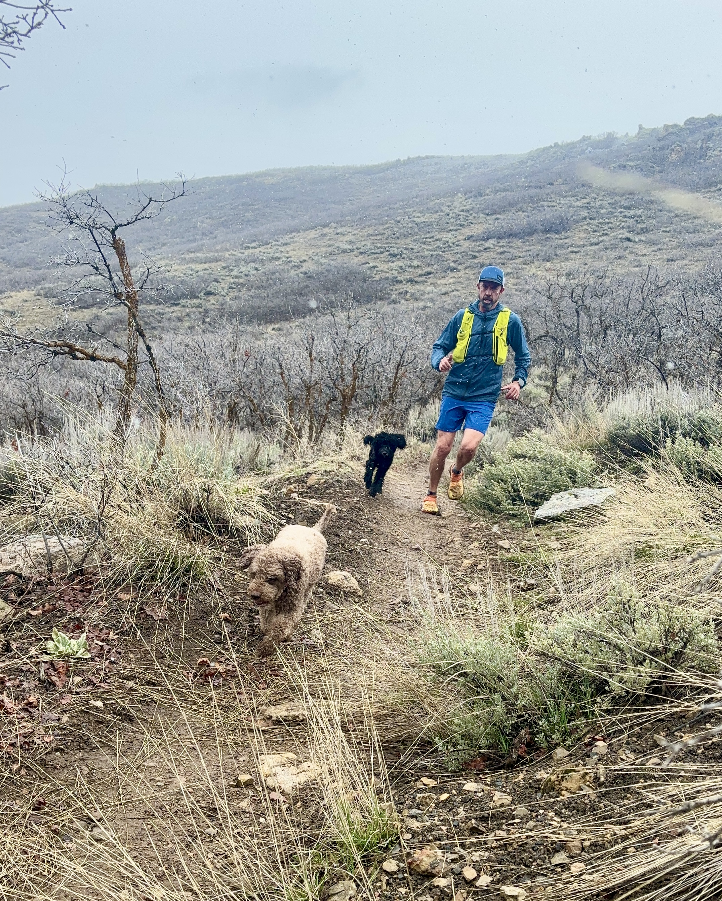
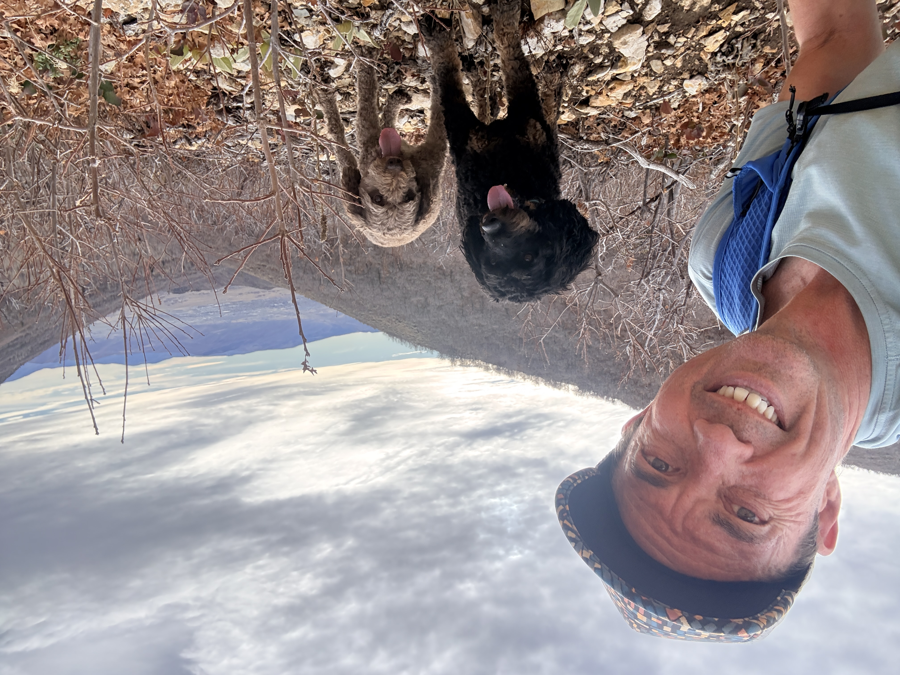
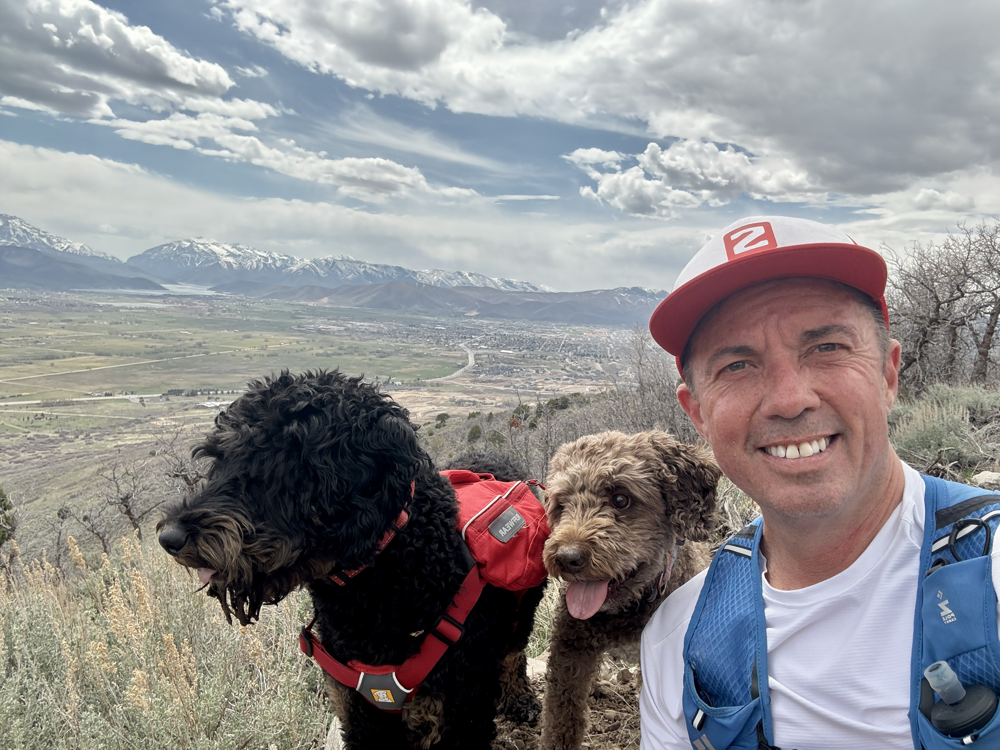

Hundreds of Local Miles
We have run hundreds of miles on trails around the Wasatch Back, with a heavy focus on Midway and the Heber Valley. Those miles built a practical map of what works for dogs and what to avoid.
I love trail running, and my two well-behaved dogs love it even more. The same terrain choices and pacing strategy we use every week shape how I condition client dogs.
My Story
We have run hundreds of miles on trails around the Wasatch Back, with a heavy focus on Midway and the Heber Valley. Those miles built a practical map of what works for dogs and what to avoid.
We know where to go based on season, trail exposure, time of day, snowpack, and heat load. Early sun routes in spring, shaded climbs in summer, and safer footing in winter all matter.
Good dog running is part fitness and part decision-making: reading paw contact, spotting fatigue before it becomes risk, rotating surfaces for joint health, and balancing effort with recovery so dogs come home worked, not wrecked.
My dogs helped build this system. Their consistency, focus, and trail manners shaped the standards I now use with every client dog: calm starts, structured movement, and clean finishes.
Trail Gallery







Meet my Running Partners

Milo is 13 years old and a strong, seasoned runner with a lifetime of trail miles behind him. He brings calm confidence and steady trail manners to every outing. At trailheads, he sets a composed tone. Through technical sections, he stays consistent. He shows younger dogs what controlled effort over distance truly looks like.
Hank is 2 years old and full of energy and drive. He brings enthusiasm, curiosity, and a genuine love for the outdoors to every climb. He keeps momentum high, reads the pack well, and helps new dogs feel included while still respecting structure and commands.
Both are well behaved, welcoming, and central to how this program operates. They model steady pacing, good behavior, and positive pack energy from start to finish.
Together, they create the kind of run we value most: focused movement, safe decisions, and dogs that come home physically worked and mentally settled.